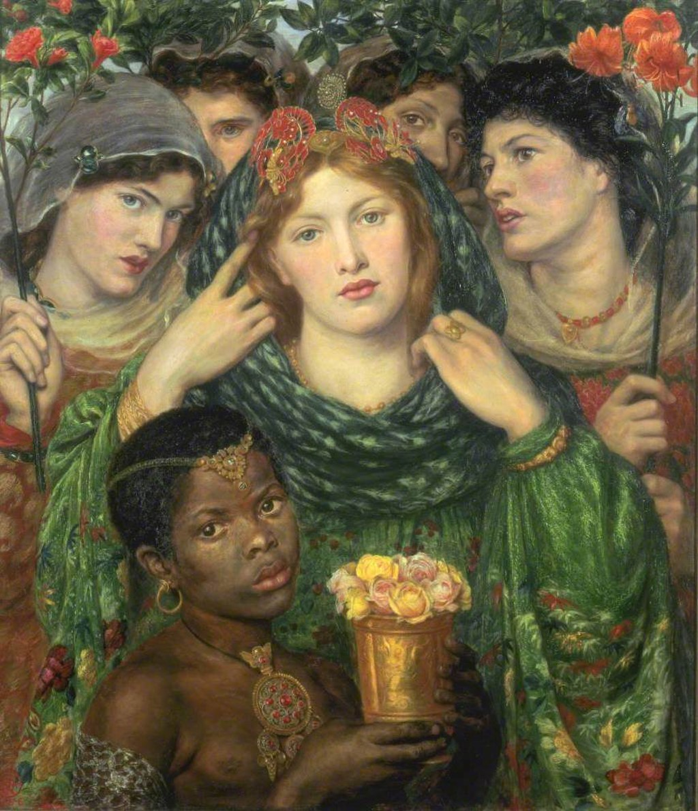

<head>
<meta charset="UTF-8" />
<meta name="keywords" content="drawing, painting" />
<meta name="description" content="drawings by Sunjy" />
<title>Sunjy</title>
<link rel="shortcut icon" type="image/x-icon" href="../../mImages/mCommon/favicon.ico" media="screen" />
<link rel="stylesheet" type="text/css" href="../../mCsses/mCommon/mCssA.css" />
<link rel="stylesheet" type="text/css" href="../../mCsses/mCommon/mCssB.css" />
<link rel="stylesheet" type="text/css" href="../../mCsses/mCommon/mCssC.css" />
<link rel="stylesheet" type="text/css" href="../../mCsses/mCommon/mCssD.css" />
<link rel="stylesheet" type="text/css" href="../../mCsses/mContent/mCssA.css" />
<link rel="stylesheet" type="text/css" href="../../mCsses/mContent/mCssB.css" />
<link rel="stylesheet" type="text/css" href="../../mCsses/mContent/mCssC.css" />
<link rel="stylesheet" type="text/css" href="../../mCsses/mContent/mCssD.css" />
</head>
<script type="text/javascript" src="../../mScripts/mContent/mContentAA.js" /></script>
<script type="text/javascript" src="../../mScripts/mContent/mContentAB.js" /></script>
<script type="text/javascript" src="../../mScripts/mContent/mContentAC.js" /></script>
<script type="text/javascript" src="../../mScripts/mContent/mContentAD.js" /></script>
<script type="text/javascript"></script> 
<script type="text/javascript">
document.write('<div class="mImgAbsolute"></div>');
/*
document.write('<p class="mFontSizeBColor" />From a white paper...</p>');
document.write('<table class="center"><tr><td>');
document.write('');
document.write('</td></tr></table>');
*/
</script>


<script type="text/javascript">
document.write('<p class="mFontSizeBColor" />The Beloved</p>');
document.write('<p class="mFontSizeSColor" />“The Beloved” by Dante Gabriel Rossetti was inspired by the biblical “Song of Solomon.” It tells the story of a young woman preparing to marry.<br><br>The bride is depicted moving back her veil, while her eyes are fixed directly on the viewer. She is attended by four bridesmaids and an African page child, holding roses.<br><br>The bridal party all contrasts strikingly with the red hair and pale skin of the bride. They have varying shades of brunette hair and darker skin tones. This color contrast was carefully painted as a frame to the bride’s features.<br><br>Rossetti visited Manet while working on this painting, and the controversial painting Olympia by Édouard Manet influenced this composition. <br><br>Commentators suggest that Rossetti is celebrating beauty and diversity. Others see it as imposing white standards of beauty, positioning the bride as superior due to the color of her skin.<br><br>The bride’s head-dress is Peruvian, and the gown is Japanese. The exotic dresses of the bride and her attendees frame the face of the bride. The Bride dominants the center of the composition.<br><br>Rossetti finished this painting in 1866, but like several other paintings, he continued to make changes to it throughout his life.<br><br>Song of Solomon<br><br>This painting illustrates the Song of Solomon. Two passages from the Song of Solomon are inscribed on the picture’s gilded frame:<br><br>“My beloved is mine, and I am his.” (2:16)<br><br>and<br><br>“Let him kiss me with the kisses of his mouth:  (1:2)<br><br>The Song of Solomon is one of the books of the Old Testament. It is unique within the Bible as it is not primarily about religious law, nor does it teach or explore wisdom like Proverbs or Ecclesiastes.<br><br>Instead, it celebrates love, expressed in the voices of two lovers and their joy. Each desiring the other and rejoicing in intimacy. The women of Jerusalem form a chorus to the lovers, functioning as an audience whose participation facilitates the participation of the reader.<br><br>My Beloved is Mine, and I am His –  Hymn<br><br>“My Beloved is mine, and I am His,<br>His banner over me is love;<br>He brought me to His banqueting table…<br>He lifted me up into heavenly places…<br>My Beloved is mine, and I am His…”<br><br>For thy Love is better than Wine<br><br>“Let him kiss me with the kisses of his mouth!<br>For your love is more delightful than wine.<br>The fragrance of your perfume is pleasing;<br>your name is like perfume poured out.<br>No wonder the maidens adore you.”<br></p>');
document.write('<table class="center" /><tr><td>');
document.write('<br>The bride is depicted moving back her veil, while her eyes are fixed directly on the viewer. She is attended by four bridesmaids and an African page child, holding roses.<br><br>The bridal party all contrasts strikingly with the red hair and pale skin of the bride. They have varying shades of brunette hair and darker skin tones. This color contrast was carefully painted as a frame to the bride’s features.<br><br>Rossetti visited Manet while working on this painting, and the controversial painting Olympia by Édouard Manet influenced this composition. <br><br>Commentators suggest that Rossetti is celebrating beauty and diversity. Others see it as imposing white standards of beauty, positioning the bride as superior due to the color of her skin.<br><br>The bride’s head-dress is Peruvian, and the gown is Japanese. The exotic dresses of the bride and her attendees frame the face of the bride. The Bride dominants the center of the composition.<br><br>Rossetti finished this painting in 1866, but like several other paintings, he continued to make changes to it throughout his life.<br><br>Song of Solomon<br><br>This painting illustrates the Song of Solomon. Two passages from the Song of Solomon are inscribed on the picture’s gilded frame:<br><br>“My beloved is mine, and I am his.” (2:16)<br><br>and<br><br>“Let him kiss me with the kisses of his mouth:  (1:2)<br><br>The Song of Solomon is one of the books of the Old Testament. It is unique within the Bible as it is not primarily about religious law, nor does it teach or explore wisdom like Proverbs or Ecclesiastes.<br><br>Instead, it celebrates love, expressed in the voices of two lovers and their joy. Each desiring the other and rejoicing in intimacy. The women of Jerusalem form a chorus to the lovers, functioning as an audience whose participation facilitates the participation of the reader.<br><br>My Beloved is Mine, and I am His –  Hymn<br><br>“My Beloved is mine, and I am His,<br>His banner over me is love;<br>He brought me to His banqueting table…<br>He lifted me up into heavenly places…<br>My Beloved is mine, and I am His…”<br><br>For thy Love is better than Wine<br><br>“Let him kiss me with the kisses of his mouth!<br>For your love is more delightful than wine.<br>The fragrance of your perfume is pleasing;<br>your name is like perfume poured out.<br>No wonder the maidens adore you.”<br>" />');
document.write('</td></tr></table>');
</script>


